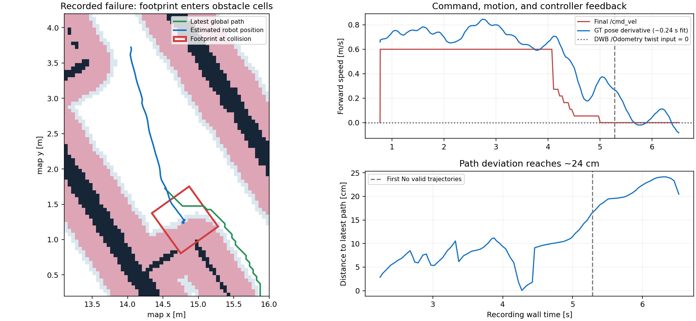
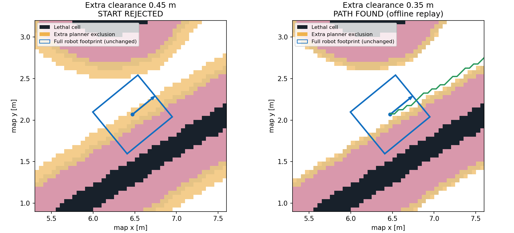
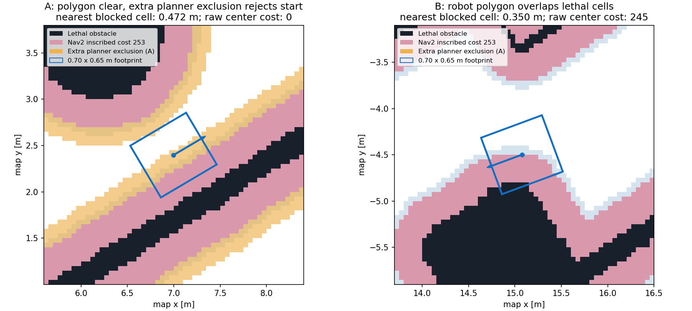
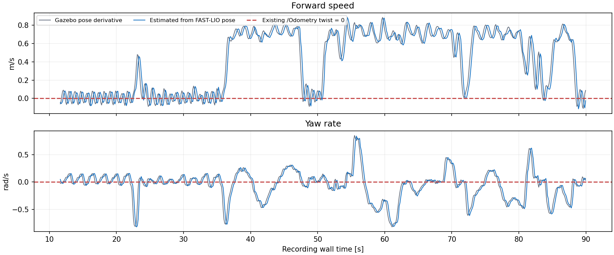

최신 기본값은 다시 clearance 0.45m입니다. 0.35m는 이전 기록에서 출발점 거절을 해소했지만 실제 주행 여유를 검증하지 못했습니다. 원래 파일과 알고리즘을 보존한 채 trial 전용 설정만 복구했습니다. 현재 실행 중인 노드에는 재시작 전까지 반영되지 않습니다. 속도 추정기도 기본 OFF를 유지합니다.
새 기록에서 0.35m 적용과 /Odometry 입력을 확인했습니다. 아래는 이후 동쪽 통로 주행 6초의 기록입니다. 원래 멈춘 위쪽 통로 snapshot과 시간/위치를 혼합하지 않았습니다.

판단: hard margin을 줄이는 것만으로는 충분하지 않습니다. 선호 경로의 여유 거리, 추종 오차, 실제 속도/감속 및 yaw 응답을 일치시켜 충돌 경계에 들어가기 전에 제어해야 합니다. footprint/Collision Monitor를 추가로 줄이거나 충돌 판정을 우회하지 않았습니다. 이번 작업으로 실제 주행 완주가 검증된 것은 아닙니다.
속도 추정 기본값을 껐습니다. 재시작된 실제 controller_server의 odom_topic도 /Odometry로 확인했습니다. 그 상태에서도 grid start invalid가 반복됐습니다. 추정 정확도 개선만으로 폐루프 주행 개선이 입증되는 것은 아니며, 앞서 기본 활성화한 결정은 철회했습니다.
Paused 상태에서 목표는 이미 aborted였습니다. 새 목표나 이동 명령 없이 15초간 Play 후 다시 Pause하여 costmap을 수집했습니다. 첫 global snapshot에서 중심-장애물 셀 거리는 약 0.472m, 중심 cost는 0, 전체 footprint 검사는 통과했습니다. 전역 플래너의 별도 0.45m clearance에 5cm 셀 보정 약 0.071m가 더해져 출발점을 거절했습니다.

| 동일 기록 재생 | 결과 |
|---|---|
| 추가 clearance 0.45m | grid start invalid, 확장 0 |
| 추가 clearance 0.35m | 경로 생성, 약 131ms; 높이/terrain 검사는 유지 |
변경: legged_range_trial/config/planner.yaml을 별도로 두고 0.35m를 기본값으로 사용합니다. 기존 legged_bringup 설정과 global planner 코드는 보존했습니다. DWB footprint 0.70×0.65m, Collision Monitor, inflation 0.4m는 유지합니다. 실행 중인 navigation에는 아직 이전 0.45m가 남아 있어 재시작이 필요합니다. 같은 명령으로 실행할 수 있습니다.
한계: 실제 주행 완주는 아직 확인하지 않았습니다. 이 15초 기록 중 일부 자세는 footprint 충돌 판정도 있었습니다. 또한 /cmd_vel이 모두 0인데도 GT pose가 약 0.33m 이동하고 yaw가 약 0.53rad 변했습니다. 보행 정책 입력과 실제 정지 응답은 별도 검증이 필요하며, clearance 하나로 모든 정지가 해결됐다고 볼 수 없습니다. 현재 목표는 종료 상태라 재시작 후 Play와 새 목표 지정이 필요합니다.
Gazebo 종료는 별도로 LiDAR 플러그인 충돌 보고서에서 확인했습니다. 수정 바이너리는 설치됐으며 다음 Gazebo 프로세스 시작부터 적용됩니다.
2026-10-27 · legged_range_trial · cost_wall_lower10_v3 · 실제 기록과 오프라인 재생
단일 정지 장치 문제가 아닙니다. 전역 플래너의 추가 여유 거리로 출발이 거절되는 경우와, 로봇 footprint가 실제 costmap 장애물 셀과 겹치는 경우가 모두 관측됐습니다. 별도로 DWB에 들어가는 FAST-LIO 속도는 모든 669개 샘플에서 0이었습니다.
| 관측 | 의미 |
|---|---|
| grid start invalid | 전역 경로 탐색 시작점 거절. FollowPath 취소 및 재시도. failure_tolerance를 늘려도 이 조건은 바뀌지 않음. |
| 추가 clearance 0.45m | Nav2 inflation 0.4m와 별개의 hard exclusion. 5cm 셀 면적 여유를 포함해 약 0.521m 셀 중심 거리까지 차단. |
| No valid trajectories | DWB가 유효 후보를 찾지 못한 경우. 후반 기록은 footprint와 lethal cell이 실제로 겹침. |
| raw → safe → /cmd_vel | 최대 전진 0.6m/s, yaw 0.8rad/s가 최종 명령까지 도달함. Collision Monitor가 명령을 계속 차단한 상황은 아님. |
| 목표 aborted 이후 | 현재 BT는 유한 횟수 재시도 후 종료. 새 목표 없이 무기한 자동 재개하지 않으며, 검증된 후진 탈출 동작도 없음. |

각 경고 시각과 가장 가까운 global costmap을 사용했습니다. A는 경고 후 약 0.14초, B는 경고 전 약 0.28초의 샘플입니다. 지도에서의 충돌 판정이며 Gazebo 물리 접촉을 증명하는 그림은 아닙니다. 초기 Pause 위치를 나중 costmap에 적용한 반사실 재생에서도 추가 clearance에 의한 탐색 거절이 재현됐습니다.
/Odometry pose (camera_init → body)
↓ 입력 시각 body → base_link TF, 회전 중심 보정
최근 0.4초 x/y/yaw 선형 회귀
↓ 약 0.2초 필터 지연
/legged/controller_odom
├─ DWB / BT의 실제 속도 입력
└─ watchdog freshness 확인
map TF · 원본 /Odometry · Height planner는 변경하지 않음
/cmd_vel은 추정 입력으로 사용하지 않음
변경은 legged_range_trial에만 들어갑니다. 시간 역행·0.5초 이상 공백·큰 위치 점프·TF 누락은 새 추정이 쌓일 때까지 출력을 중단합니다. 원본 localization에 이 제어용 평면 odometry를 되먹임하지 않습니다.

| RMSE | 기존 0 속도 입력 | pose 기반 추정 |
|---|---|---|
| 전진 속도 | 0.529 m/s | 0.096 m/s |
| yaw rate | 0.263 rad/s | 0.106 rad/s |
한 기록의 Gazebo pose 미분을 비교 기준으로 사용했습니다. 667개 유효 추정, 초기 2개 warmup. 추정기 자체 데스크톱 p95 약 6μs이며 ROS/TF 비용을 포함하지 않고 Jetson 성능 수치도 아닙니다.
추가 clearance 0.45m, inflation 0.4m, footprint, Collision Monitor는 유지했습니다. 이미 footprint가 충돌 영역에 들어간 상태에서는 강제 회전이나 장애물 셀 삭제보다, 지도/위치 일치 확인과 충돌 없는 복귀 경로가 먼저 필요합니다.
새 속도 입력이 실제 DWB에 연결됐습니다. 20초 기록에서 제어용 속도 167개 모두 움직임에 따른 값이 나왔고, 원본 /Odometry는 170개 모두 twist가 0이었습니다.
다만 전역 planner의 출발 거절은 여전히 반복됐습니다. 마지막 샘플은 footprint 충돌 검사 pass, 장애물 셀 중심 거리 약 0.495m였으나 추가 clearance 0.45m 및 셀 여유에 걸렸습니다. 같은 snapshot·height·목표를 재생하면 0.45m에서 탐색 시작 거절, 0.35m에서 약 60ms에 경로가 생성됐습니다. 이는 오프라인 비교이고 실제 0.35m 주행 성공을 의미하지 않습니다. 이 확인 중 실행 설정이나 목표를 변경하지 않았습니다.
사용자가 재시작한 현재 navigation에는 새 속도 입력이 반영된 것을 확인했습니다. 아래는 같은 구성을 다시 실행할 때의 명령입니다.
source /home/kim/legged_robot_ws/install/local_setup.bash ros2 launch legged_range_trial navigate.launch.py \ site:=/home/kim/legged_robot_ws/maps/cost_wall_lower10_v3/site.yaml \ use_sim_time:=true \ cloud_topic:=/livox/lidar_PointCloud2
원래 속도 입력이 기본값입니다: estimate_velocity:=false. 추정기는 명시적인 estimate_velocity:=true 비교 시험에서만 사용합니다. 정상적인 measured twist가 들어오는 odometry를 사용한다면 추정기를 우회할 수 있습니다.